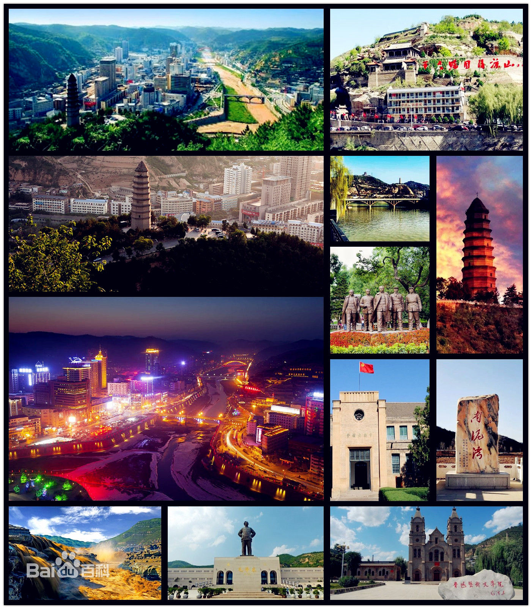
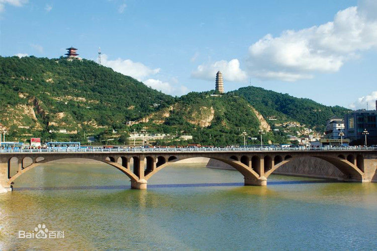
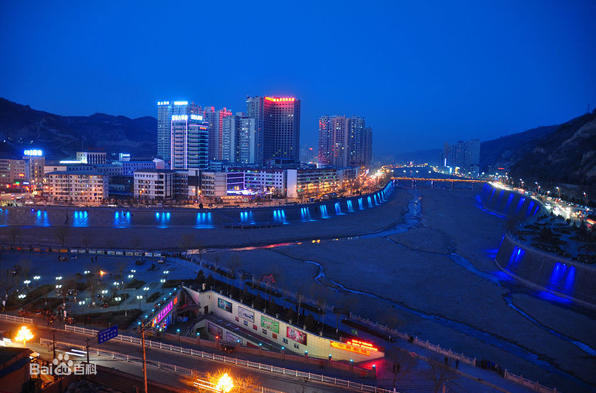

延安市，简称“延”，陕西省地级市，是天下第一陵——中华民族始祖黄帝陵寝黄帝陵所在地
，是民族圣地、中国革命圣地，国务院首批公布的国家历史文化名城
。延安位于陕西省北部，地处黄河中游，黄土高原的中南地区，省会西安以北371千米。北连榆林，南接关中咸阳、铜川、渭南三市，东隔黄河与山西临汾、吕梁相望，西邻甘肃庆阳。介于北纬35°21′－37°31′，东经107°41′－110°31′之间，东西宽256千米，南北长236千米，总面积37037平方千米，被誉为“三秦锁钥，五路襟喉”。

延安古称肤施、延州，是中华民族重要的发祥地，人文始祖黄帝曾居住在这一带。民国二十四年（1935年）10月，中共中央和中央红军胜利到达吴起镇，延安成为中国革命的落脚点和出发点，是全国革命根据地城市中旧址保存规模最大、数量最多、布局最为完整的城市
。党中央和毛主席等老一辈革命家在这里生活战斗了十三个春秋，领导了抗日战争和解放战争，培育了延安精神，是全国爱国主义、革命传统和延安精神三大教育基地。

截至2018年，延安市下辖2个区、11个县
，常住人口225.94万人，实现地区生产总值（GDP）1558.91亿元，其中，第一产业增加值138.07亿元，第二产业增加值925.97亿元，第三产业增加值494.88亿元，三次产业构成为8.9：59.4：31.7，按常住人口计算，全年人均生产总值68940元。

延安是“双拥运动”发祥地，中国优秀旅游城市，有着“中国革命博物馆城”的美誉
。境内有各类文物遗址点8545处，其中革命遗址445处。